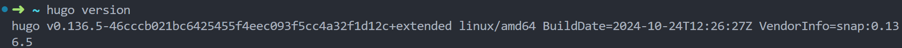
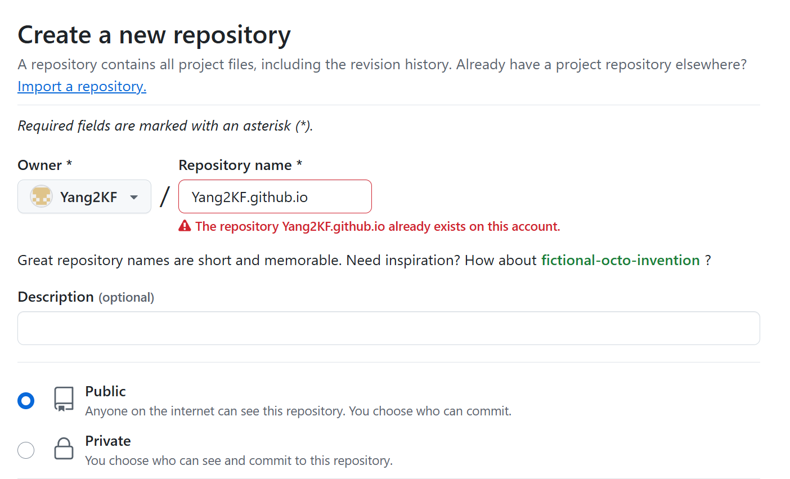

本文默认已有一定的git与命令行基础
配置环境: Ubuntu 22.04.5 LTS
安装Hugo
使用Snap包管理器（安装方法有多种，可自行选择，此处选择较为简便的方式）
sudo snap install hugo
查看hugo版本
hugo version

如果显示找不到该命令，则在~/.bashrc设置一下环境变量即可
export PATH=$PATH:/snap/bin
创建站点
hugo new site Start
执行命令之后，进入你所创建的站点目录（下文统称此目录为根目录），会看见像这样的文件结构
├── archetypes
│ └── default.md #生成博文的模板
├── assets #存放 css、js 文件
├── content #存放markdown博文
├── data #存放 Hugo 处理的数据
├── hugo.toml #Hugo 配置文件
├── layouts #存放html文件
├── static #静态资源文件
└── themes #存放不同主题
比较主要的文件有
- assets: 可自定义css，js
- layouts: 可自定义html生成模板
选择合适的主题
为避免本地仓库与远程仓库分支名称不一致的冲突，建议将git主分支名称设置为main，与GitHub默认主分支名称保持一致
首先将根目录初始化为本地git仓库
git init
访问官方主题网站：https://themes.gohugo.io/
选择你所喜欢的主题，不同主题安装方式可能略有不同，请参照主题主页的文档，此处以PaperMod为例
在根目录下执行该命令，即将该仓库作为本地仓库的子模块
git submodule add --depth=1 https://github.com/adityatelange/hugo-PaperMod.git themes/PaperMod
然后在hugo.yml里添加主题即可（默认配置文件格式为toml，但yml更为直观）
theme: 'PaperMod'
最后建议将此本地仓库push至github进行版本管理，即作为我们博客的源代码
创建博文
顺利完成上述操作后，可以通过hugo new命令创建新的博文
hugo new posts/Test.md
这个命令会在content目录下生成posts文件夹，并在posts文件夹下生成Test.md文件
+++
date = '2024-10-30T19:25:01+08:00'
draft = true
title = 'Test'
+++
该文件自动生成的内容为博文的front matter，可以通过修改archetypes中的default.md自行配置front matter
该文件中的draft为草稿，只有设置为false时才会将博文正式发布
发布博文
hugo server
使用此命令即可启动hugo服务，然后访问http://localhost:1313/即可看见所编写的博文
hugo server -D
还可以通过此命令访问尚处于草稿状态的博文
配置Github Pages
在github创建一个新仓库

仓库名称必须为 用户名.github.io，仓库访问权限必须为public
之后在你的根目录下执行该命令
hugo
成功后会构建一个public目录，该目录即为根据hugo框架构建的静态网页文件，需要将此文件部署到github上
进入该文件夹
cd public
初始化为本地git仓库
git init
将你所创建的仓库添加为远程仓库
git remote add origin git@github.com:Yang2KF/Yang2KF.github.io.git
将内容添加到暂存区并提交
git add .
git commit -m "first commit"
推送到远程仓库
git push -u origin main
此仓库即可作为存放所生成的静态网页的仓库，与博客源代码仓库区分开来
最后再修改hugo.yml，将url替换成你的仓库名称即可对该链接进行访问
baseURL: 'https://Yang2KF.github.io'